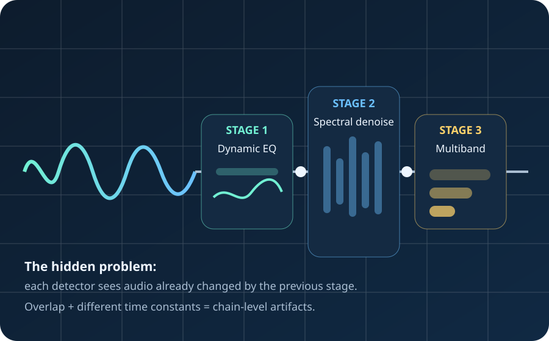

Detector interaction
A dynamic processor does more than alter the audible signal. It changes the energy distribution, transients, noise floor, and spectral balance seen by the next detector.
Dynamic multi-frequency processing
Spectral denoisers, dynamic EQ, multiband compressors, de-essers, and related processors can interact in ways that are not obvious when each plug-in is auditioned alone. This guide focuses on the avoidable chain-level failures and the design habits that prevent them.

Why chains fail
A dynamic processor does more than alter the audible signal. It changes the energy distribution, transients, noise floor, and spectral balance seen by the next detector.
Three individually mild processors can produce severe combined attenuation, unstable gain envelopes, smeared timing, or repeated analysis of artifacts created upstream.
Failure modes
Prevention patterns
Do not let three processors all perform general cleanup. Separate impulsive events, broadband noise, tonal residue, sibilance, and macro-dynamics.
If two processors work the same frequencies for the same reason, that overlap should be deliberate and conservative.
FFT window, lookahead, attack, release, and gate recovery should make sense together rather than being independently optimized in isolation.
Early specialist stages may work harder. Later stages should usually make smaller corrective moves because the signal has already been shaped.
Avoid feeding a boosted or spectrally skewed signal into a downstream detector unless that change is intentional.
Repeated denoise → reconstruct → reanalyze cycles can cause downstream processors to learn upstream artifacts as though they were the original noise.
Interactive technical illustrations
Longer windows improve frequency specificity but reduce temporal precision. Bigger is not automatically better.
Transient tracking
Frequency specificity
Best use
Serial reductions add in dB. Several small cuts can become a large one.
Mismatched recovery times can create background breathing, flutter, or what we have been calling envelope uulation.
Architecture
Quick audit